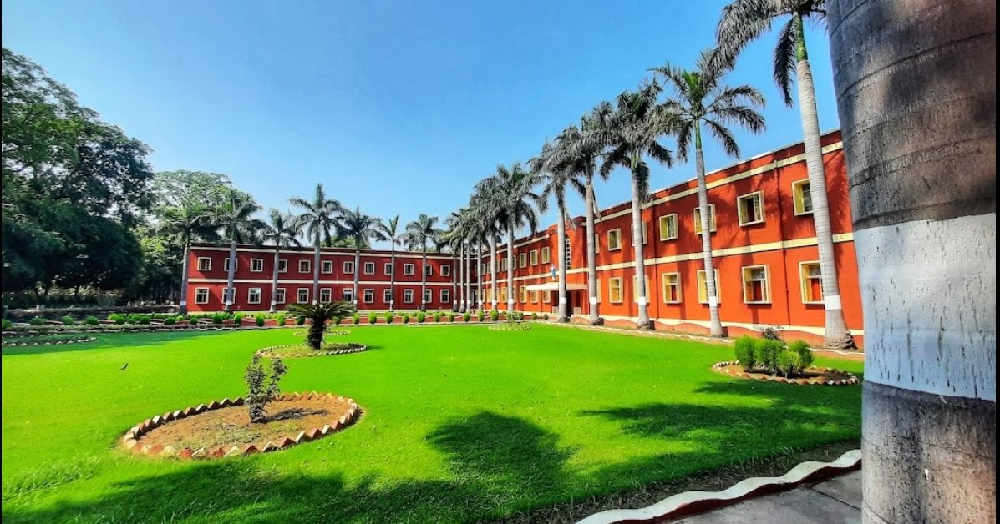
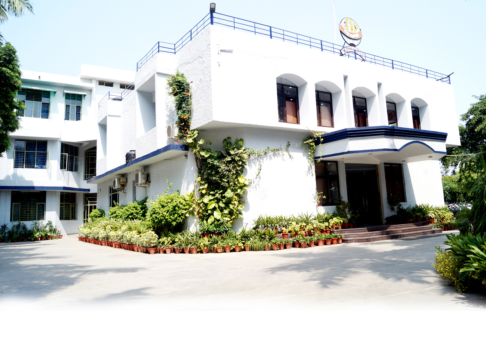
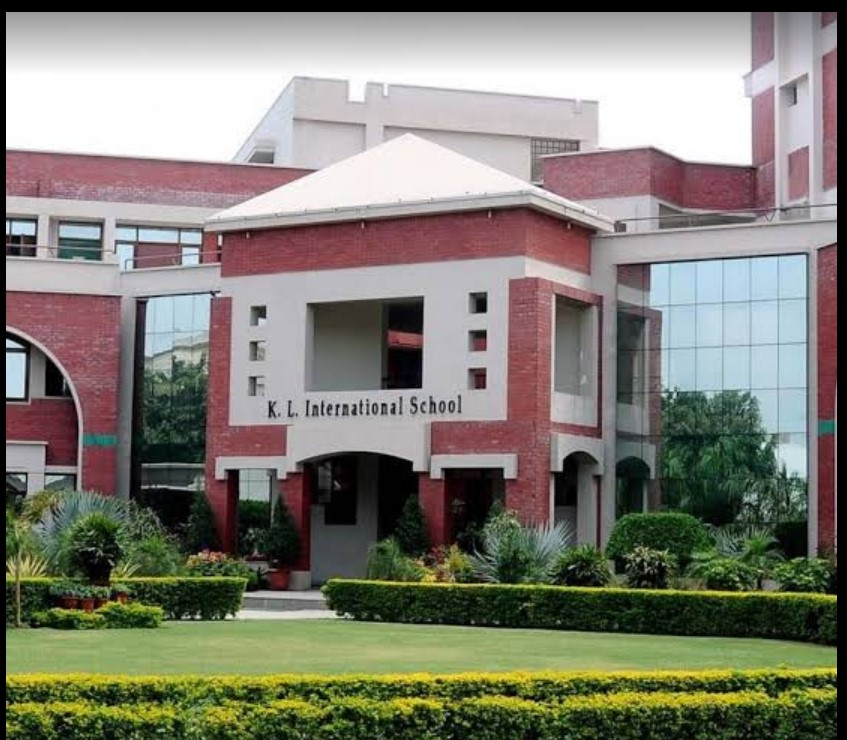
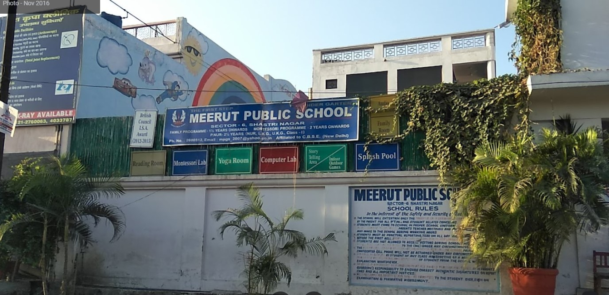
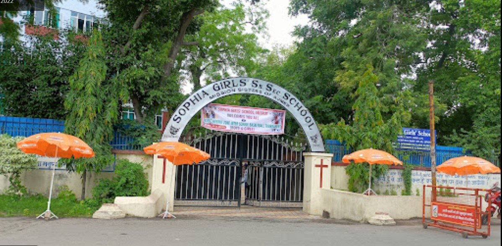
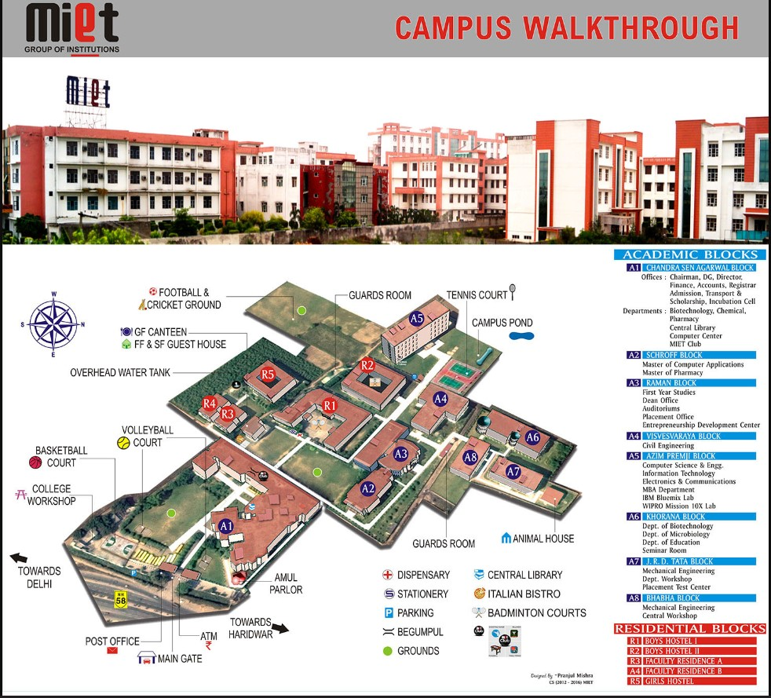
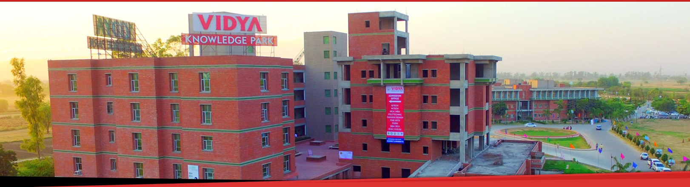
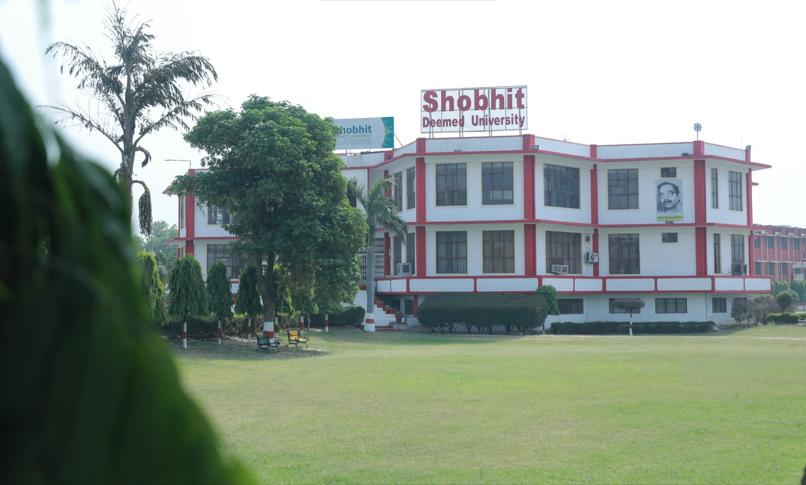
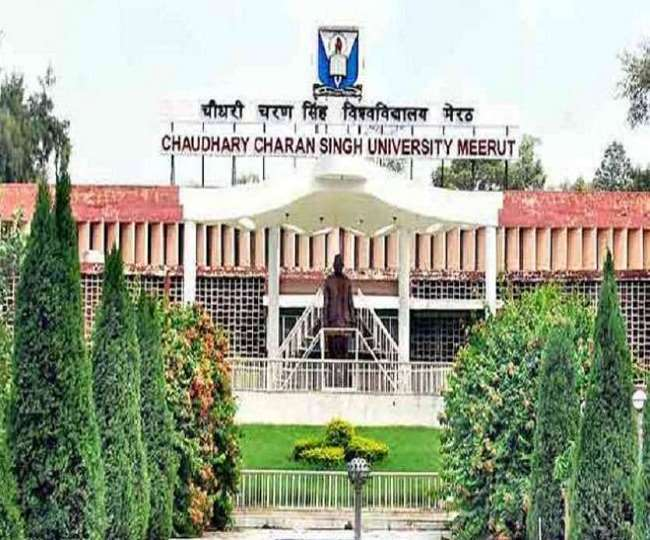
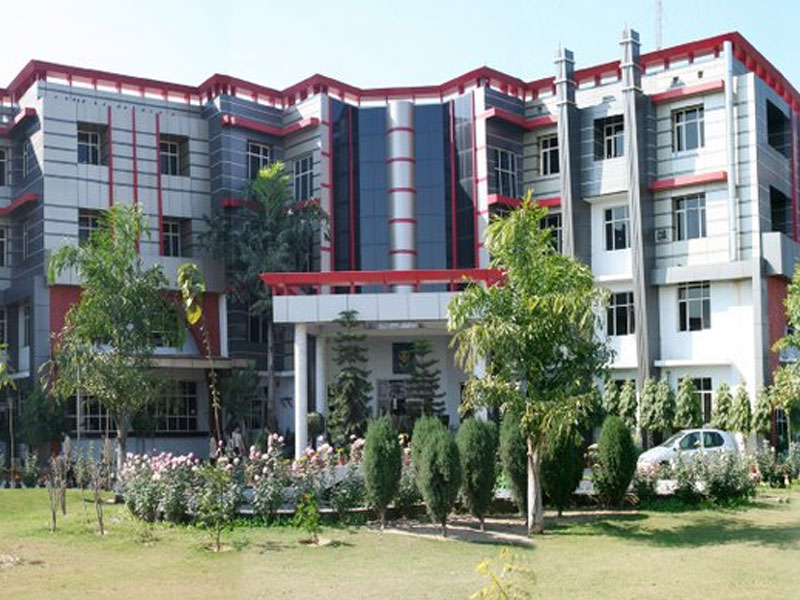

The school is a place where the kids of today are raised up to be the better future of a country for tomorrow.
The School is certainly a sacred place where the education is imparted to make a nation smart and civilized,
stronger and developed for tomorrow.The school is like the second home of a student.
It teaches you the good manners and good habits in your life.
The best schools have always the best results.
We all should feel proud on our school because it has prepared the best minds. It has created many successful
persons, engineers, doctors, lawyers, businessman, IT professionals, Civil service officers etc.
The schools like ours, are the real assets of a nation. The nations are made great with the strongest institutions.
Some of the prominent Schools are as follows:
St. Mary's Academy is the best school that you may found near Meerut. It is 30th best school in India and it is 2nd best school in Uttar Pradesh.
BestSchool rating for this school is A1 , which means this school is legend among other schools in India,
A1 rating is granted to only the best amongst best schools and there are no better schools than these schools.
This School is a rare gem in Indian schooling system.. St. Mary's Academy is one of the top 10 schools near Meerut.
St. Mary's Academy is affiliated by Council for the Indian School Certificate Examinations and its ICSE board affiliation code is UP071.
Overall this school scores 10 out of 10. Ranking and rating calculations are primarily based on results of 175 students who appeared on
last year board exam and scored an average of 90.58%.

Click to get the location of St. Mary's Academy
Dewan Public School is 2nd best school around Meerut It is 517th best school in India and it is 51st best school in Uttar Pradesh.
BestSchool rating for this school is A1 , which means this school is legend among other schools in India, A1 rating is granted to
only the best amongst best schools and there are no better schools than these schools. This School is a rare gem in Indian schooling system..
Dewan Public School is one of the top 10 schools near Meerut.
Dewan Public School is affiliated by Central Board of Secondary Education and its CBSE board affiliation code is 2130181.Overall this school
scores 10 out of 10. Ranking and rating calculations are primarily based on results of 466 students who appeared on last year board exam and
scored an average of 80.70%.

Click to get the Location of Dewan Public School
K L International School is 3rd best school around Meerut It is 534th best school in India and it is 53rd best school in Uttar Pradesh.
BestSchool rating for this school is A1 , which means this school is legend among other schools in India, A1 rating is granted to only the
best amongst best schools and there are no better schools than these schools. This School is a rare gem in Indian schooling system.
K L International School is one of the top 10 schools near Meerut.
K L International School is affiliated by Central Board of Secondary Education and its CBSE board affiliation code is 2130655. Overall this
school scores 10 out of 10. Ranking and rating calculations are primarily based on results of 178 students who appeared on last year board exam
and scored an average of 80.56%.

Click to get the location of K L International School
Meerut Pub Girls School is 4th best school around Meerut It is 558th best school in India and it is 55th best school in Uttar Pradesh.
BestSchool rating for this school is A1 , which means this school is legend among other schools in India, A1 rating is granted to only
the best amongst best schools and there are no better schools than these schools. This School is a rare gem in Indian schooling system.
Meerut Pub Girls School is one of the top 10 schools near Meerut.
Meerut Pub Girls School is affiliated by Central Board of Secondary Education and its CBSE board affiliation code is 2130593.
Overall this school scores 10 out of 10. Ranking and rating calculations are primarily based on results of 257 students who appeared on
last year board exam and scored an average of 80.31%.

Click to get the location of Meerut Pub Girls School
Sophia Girls' School is 5th best school around Meerut It is 257th best school in India and it is 22nd best school in Uttar Pradesh.
BestSchool rating for this school is A2, that being said this school is excellent in compare to other schools, A2 rating is given to
only top notch schools. There are rare schools which are better than these schools in fact schools with rating of A1 are the only schools
which shall be considered better than A2 rated school. Sophia Girls' School is one of the top 10 schools near Meerut.
Sophia Girls' School is affiliated by Council for the Indian School Certificate Examinations and its ICSE board affiliation code is UP070.
Overall this school scores 9 out of 10. Ranking and rating calculations are primarily based on results of 204 students who appeared on last
year board exam and scored an average of 85.12%.

Click to get the location of Sophia Girls' School
College Life is one of the most remarkable and lovable times of an individual's life. Unlike School Life, College Life has a
different experience, and a person needs to have this experience in his/her life. College Life exposes us to whole new experiences
which we always dream of experiencing after our school life. Lucky are those who get the chance to enjoy their college life, as
many people don't get this chance due to their circumstances or financial issues. For every person, College Life has a different meaning.
While some people spend their college life partying with friends, others become more cautious about their careers and study hard. Whatever
the way, every individual enjoys their college life and always wishes to relive that time once it is over.
Both school life and college life is the most memorable time of a person's life, but both of them are quite different from each other.
While in School life, we learn everything in a protected environment, College Life exposes us to a new environment where we have to learn
new things and face new challenges by ourselves.
Some of the prominent Colleges are as follows:
The mission of the institute is to educate young aspirants in various technical fields to fulfill global requirement of human resources by
providing sustainable quality education, training and invigorating environment besides molding them into skilled competent and socially
responsible citizens who will lead the building of a powerful nation.
Shri Vishnu Saran, B.E. (Mechanical), Chairman of MIET, has obtained his B.E. (Hons.) degree from NIT Kurukshetra and then served the state of
Uttar Pradesh for over 37 years as Director of Boilers. He is a man with an extraordinary perception of a better tomorrow for each student who
enters the premises of MIET through the provision of the best possible resources one could ask for. He is a visionary who is carrying on the dream
philanthropic project nurtured by his father, the Founder-Chairman of MIET Group, Late Sri CS Agarwal. He strongly believes and follows the four
golden principles for success laid by the honourable Late Smt. Indira Gandhi ji Foresight, Hard Work, Determination and Discipline. It is true
that the strength of MIET lies in his grit & determination, a forceful support by his excellent subordinates and the overall study orientation by
multi development policies that has distinctly made MIET a name brightening up in progression each year.

Click to get the location of Meerut Institute of Engineering and Technology
Vidya College of Engineering (VCE), Meerut is one of the top most institutes in the Western Belt of U.P. We, at VCE, believe not only to make
our students world class technocrats but also to nurture the values and citizenship in them. Engineering is a field of learning that links daily
life and society with science and technology; and it plays an ever-increasing role in addressing various issues that we face today on a global scale.
We also believe that the people of society expect from an institution to address various social problems and provide the solution to them by research
and training activities carried out. Apart from various departments (CSE, ECE, ME CE) at VCE, we also have dedicated directorates for improving the
quality of teaching, research, training and students welfare. We also feel privileged to serve the society by empowering the women, children and
rural mass through our Directorate of Social Empowerment.

Click to get the Location of Vidya College of Engineering
Shobhit Institute of Engineering and Technology, Deemed to be University (previously known as Shobhit University) was established with the
lofty vision of Empowering the Nation through Education. In accordance with this exalted vision, the University Logo was designed to depict the
role of the University as a centre for the Creation and Dissemination of Knowledge not only within India, but also across the globe.
The circular shape has been selected with a great deal of forethought. There is a psychology behind shapes and colours. They evoke emotions
and feelings and have a defined connotation in our subconscious. The circle is a universal symbol with extensive meaning. It represents the
notion of totality, wholeness, perfection, the Self, the infinite, the eternity, the timelessness, all cyclic movement. A circle has no
beginning and no end. It represents life and the lifecycle.

Click to get the location ofShobhit Institute of Engineering & Technology,
Vision-"To produce such professionals who have global competence, vision, and skills as are necessary to meet the challenges
of emerging global knowledge economy, by the power of innovation, creativity and efficient learning ability."
Mission-"To provide access to quality education and excellence through rigorous efforts of critical thinking, collaborative research,
and knowledge creation of global standards in a cooperative ambiance founded on Indian wisdom and values, transforming India into a developed nation".

Click to get the location of Chaudhary Charan Singh University
Vision- To be a world - class university imparting knowledge and values and providing students, an excellent learning experience through
research & innovation in the field of Science, Technology, Management and other areas that will meet the aspirations of world community.
Mission- University stands for academic, professional and ethical empowerment of the youths by using the state-of-the-art technology,
time-tested and innovative concepts, excellent infrastructure and internationally acclaimed facilitators.

Click to get the location of IIMT University